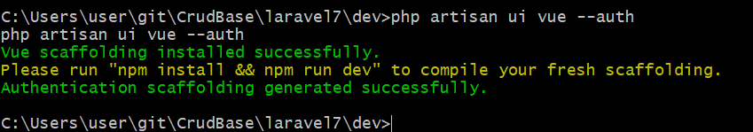
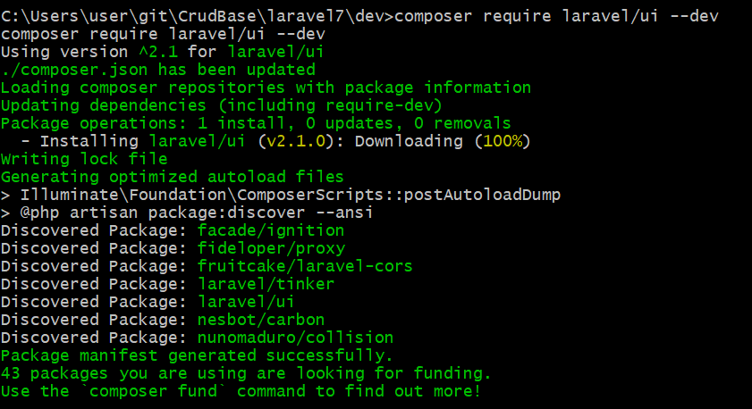
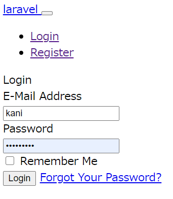
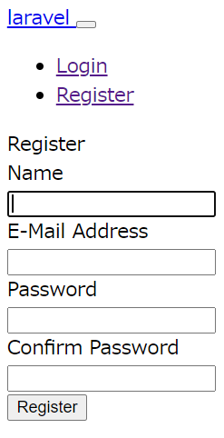
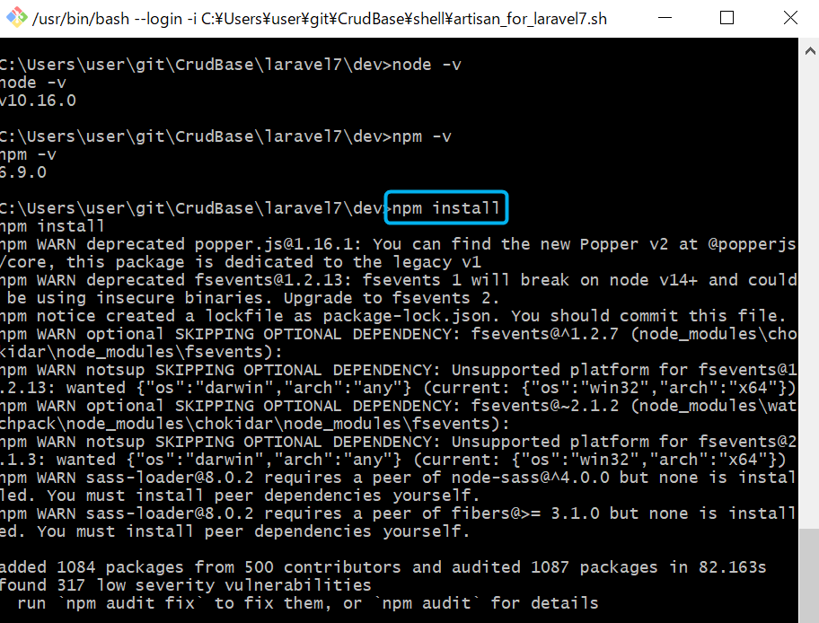
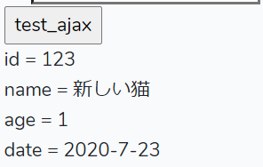

SELECT系のSQLを直接実行
$data = \DB::select('select * from nekos where id= 4');SELECT系のSQLを安全に実行
$data = \DB::select('select * from nekos where id = :id', ['id' => 4]);selectメソッドは一応どんなSQLでも実行可能。
selectメソッドはSELECT文専用ではない。UPDATEなど他のSQLも実行できる。 つまり、selectメソッドは生のSQLを何でも実行できるメソッドである。 ちなみにUPDATEなどのSQLを実行したときのレスポンスは空配列「[]」になる。$data = \DB::select("UPDATE `nekos` SET `neko_val`=2000,`neko_name`='シャム猫' WHERE id=4");INSERTを直接実行
$res = \DB::insert("INSERT INTO `nekos`(`neko_val`, `neko_name`) VALUES (1001, 'ホンハブ')");INSERTを安全に実行
$res = \DB::insert("INSERT INTO `nekos`(`neko_val`, `neko_name`) VALUES (?, ?)", [1002, 'ヒメハブ']);UPDATEを直接実行
$res = \DB::update("UPDATE `nekos` SET `neko_val`=100,`neko_name`='黒猫' WHERE id=4");UPDATEを安全に実行
$res = \DB::update("UPDATE `nekos` SET `neko_val`=?,`neko_name`=? WHERE id=?", [101,'白猫',5]);DELETE
$res = \DB::delete('delete from nekos where neko_name = ?', ['マンチカン']);レスポンスを必要としないSQLの実行
$res = \DB::statement('ALTER TABLE nekos auto_increment = 1;');\DB::beginTransaction();\DB::commit();\DB::rollback();
if(\Auth::id()){// idは未ログインである場合、nullになる。
$user_id = \Auth::id(); // ユーザーID（番号）
$user_name = \Auth::user()->name; // ユーザー名
$user_email = \Auth::user()->email; // メールアドレス
$user_password_hash = \Auth::user()->password; // ハッシュ化（解読不可）されたパスワード
}
composer require laravel/ui --dev
php artisan ui vue --auth
http://localhost/animal/public/ 
スタイルの適用
下記の手順でBootstrapを適用するとスタイルが適用されたログイン画面になる。注意
Laravel7では「php artisan make:auth」コマンドが使えなくなっている。php artisan ui bootstrapphp artisan ui vuenpm install
npm run devnpm run production
<script src="{{ asset('js/app.js') }}" defer></script>
<script src="{{ asset('/js/test.js') }}"></script>
$query = ¥DB::table('nekos AS Neko')->
select('id', 'neko_name as cat', 'neko_val', 'neko_date');
dump($query->toSql()); // →"select `id`, `neko_name` as `cat`, `neko_val`, `neko_date` from `nekos` as `Neko`"
$data = $query->get();
dump($data);
jQuery is not definedJS読み込みとCSS読み込みが逆になると「$ is not defined」のエラーが発生するようだ。
<link href="{{ asset('/css/app.css') }}" rel="stylesheet">
<script src="{{ asset('/js/app.js') }}" defer></script>
<script src="{{ asset('/js/app.js') }}" defer></script>
<link href="{{ asset('/css/app.css') }}" rel="stylesheet">
<?php $test1="Hello big fish!";?>
@include('layouts/common/test')
テンプレートの埋め込みテスト<br>
<?php echo $test1;?>
テンプレートの埋め込みテスト Hello big fish!
ビュー側（ブレードテンプレート/html)
<input type="button" value="test_ajax" onclick="test_ajax()" />
<input type="hidden" id="csrf_token" value="{{ csrf_token() }}" >
<div id="test_ajax_res"></div>
JS側
フロント側
function test_ajax(){
console.log('test_ajax');
let fd = new FormData(); // 送信フォームデータ
let data = {id:123, name:'古いねこ', age:15}; // バックエンド側に送信するデータ
let json = JSON.stringify(data);
fd.append( "key1", json );
// CSRFトークンを送信フォームデータにセットする。
let token = jQuery('#csrf_token').val();
fd.append( "_token", token );
jQuery.ajax({
type: "post",
url: 'neko/test_ajax_be',
data: fd,
cache: false,
dataType: "text",
processData: false,
contentType: false,
}).done((str_json, type) => {
console.log('レスポンスOK');
let data = null;
try{
data =jQuery.parseJSON(str_json);//パース
console.log(data);
}catch(e){
alert('データのエラー:' + str_json);
console.log(str_json);
return;
}
let res = '';
for(let field in data){
res += field + ' = ' + data[field] + '<br>';
}
jQuery('#test_ajax_res').html(res);
}).fail((jqXHR, statusText, errorThrown) => {
alert(statusText);
console.log('通信エラー');
jQuery('#test_ajax_res').html(jqXHR.responseText);
});
}
PHP側
バックエンド、つまりAjaxの受信側。通常のコントローラクラスにて処理を記述。
～ 略 ～
class NekoController
{
～ 略 ～
public function testAjax(){
$json=$_POST['key1'];
$data = json_decode($json,true);
$data['name'] = '新しい猫';
$data['age'] = 1;
$data['date'] = '2020-7-23';
$json = json_encode($data, JSON_HEX_TAG | JSON_HEX_QUOT | JSON_HEX_AMP | JSON_HEX_APOS);
return $json;
}
～ 略 ～
ルートパス
～ 略 ～
Route::post('neko/test_ajax_be', 'NekoController@testAjax');
～ 略 ～
画面側の出力例
